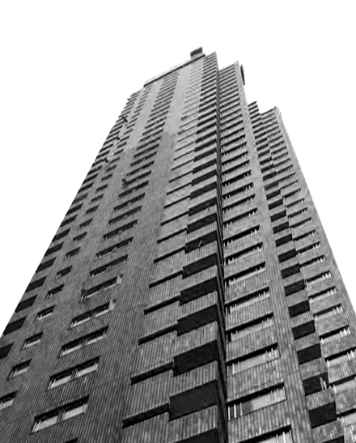
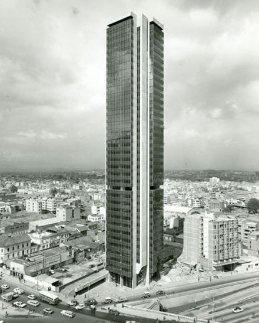

1950-1951
Hotel Tequendama Primera Etapa
El Hotel Crowne Plaza Tequendama ocupa los predios donde antiguamente se elevaba el claustro de San Diego, en el que luego funcionaron la Escuela superior de Guerra, la Escuela Militar y el Ministerio de Guerra.
Su inmueble fue el primer edificio construido en el complejo Centro Internacional Tequendama.
Su construcción se dio en el marco de la ampliación de la carrera Décima. En sus inicios colindó con el Parque Centenario.
Su inmueble fue el primer edificio construido en el complejo Centro Internacional Tequendama.
Su construcción se dio en el marco de la ampliación de la carrera Décima. En sus inicios colindó con el Parque Centenario.
1956-1960
Edificio Banco de Bogotá
El edificio Banco de Bogotá es un rascacielos de hormigón armado ubicado en la carrera 10 con calle 14, en el centro de Bogotá. Fue la primera sede del Banco de Bogotá. Tiene 22 pisos, altura significativa para la época en la que se construyo.
El edificio retoma algunos elementos del edificio Lever House, situado en el 390 de Park Avenue en New York, en particular su plataforma paramentada de cinco pisos, cuya fachada de vidrio proyecta su volumen con respecto al resto de la estructura. La estructura del edificio, en acero remachado, está cimentada en pilones de concreto.
La fachada, por su parte tiene un revestimiento de aluminio y vidrio.
El edificio retoma algunos elementos del edificio Lever House, situado en el 390 de Park Avenue en New York, en particular su plataforma paramentada de cinco pisos, cuya fachada de vidrio proyecta su volumen con respecto al resto de la estructura. La estructura del edificio, en acero remachado, está cimentada en pilones de concreto.
La fachada, por su parte tiene un revestimiento de aluminio y vidrio.
1966-1969
Edificio Avianca
Su diseño y construcción fueron adjudicados a Esguerra Sáenz, Urdaneta, Samper y Cía., Ricaurte Carrizosa Prieto y al italiano Doménico Parma, por medio de una convocatoria entre las firmas de arquitectos reconocidas de ese entonces. El diseño del edificio se completó en 1963. La construcción se desarrolló entre 1966 y 1969.
Se edificó sobre el antiguo predio del hotel Regina. A finales de 1969 se llevó a cabo su inauguración. En esa época era el rascacielos de estilo internacional más alto de Suramérica. Fue construido para la aerolínea colombiana Avianca.
Se edificó sobre el antiguo predio del hotel Regina. A finales de 1969 se llevó a cabo su inauguración. En esa época era el rascacielos de estilo internacional más alto de Suramérica. Fue construido para la aerolínea colombiana Avianca.
1966-1970
Ciudadela San Martin 1

Surge como un proyecto de la Caja de Sueldos de Retiros de la Policia Nacional, pero poco tiempo después de su inaguración pasa a convertirse en la sede del Hotel Hilton que funcionó hasta comienzos de la decada de los 90, hasta 2007 queda en olvido, para pasar a ser un proyecto de renovación urbana denominada Ciudadela San Martin, que mezcla distintos usos dentro de sus instalaciones.
1965-1970
Edificios Seguros Tequendama
Es uno de los primeros edificios en Bogotá en explorar la caracteristica de estructura a la vista como método para liberar las plantas en su interior de columnas. Tiene 38 plantas, y fue financiado por los seguros tequendama.
1965-1970
Torres del parque
Las torres que componen el conjunto son, de norte a sur, la C, la A y la B. La más alta, la A, tiene 37 pisos. Con sus 117 m y gracias a su elevada ubicación en el piedemonte del cerro de Monserrate es una de las de mayor altura de la ciudad.
Por su parte, las torres albergan 294 apartamentos de diferente superficie. Los ejes compositivos de las tres construcciones giran en torno al centro de la Plaza de Toros. Los dos inmuebles laterales se escalonan hacia ella, combinando en esa composición los cerros Orientales.
Por su parte, las torres albergan 294 apartamentos de diferente superficie. Los ejes compositivos de las tres construcciones giran en torno al centro de la Plaza de Toros. Los dos inmuebles laterales se escalonan hacia ella, combinando en esa composición los cerros Orientales.
1965-1970
Torres de Fenicia
El conjunto se encuentra en la carrera 3 # 21-46 del barrio Germania en la localidad de Santa Fe en Bogotá. Cuenta con dos torres separadas donde cada torre tiene 31 pisos, así como cuatro apartamentos por piso, para un total de doscientos cuarenta y ocho apartamentos.
Se construyeron en la segunda mitad del siglo XX dentro del proceso de densificación del centro de la ciudad en los terrenos de la antigua fábrica de vidrios y botellas Fenicia.
Se construyeron en la segunda mitad del siglo XX dentro del proceso de densificación del centro de la ciudad en los terrenos de la antigua fábrica de vidrios y botellas Fenicia.
1970-1974
Edificio de la Contraloria

Uno de los edificios mas inovadores en la historia de la arquitectura en Colombia, con una estructura central que busca libearar la planta baja de área de uso privada, por tal motivo se utiliza una estructura en péndulo invertido donde cada planta con base geométrica triangular actúa en voladizo.
1970-1974
Edificio Fonade

Un edificio de 34 plantas que al igual que muchos de los edificios de la época busca liberar las plantas interiores de estructura a la vista, para lo cual se usan columnas perimetrales y un núcleo central que garantiza una fachada abierta para que muestre una fachada en vidrio color oscuro.
1972-1976
Edificio royal & Sun Alliance
Similar al edificio fonade adopta una postura de fachada donde el cerramiento son paneles de vidrio de color oscuro.
1970-1977
Edificio del banco cafetero
Está ubicado en la Calle 28 # 13A - 15 tiene 17 ascensores. En cuanto a las fachadas de la edificación,están definidas por ventanales continuos y a los 2 laterales por una sola línea vertical de ventanales en cada mitad.
Además la torre cuenta con buenos espacios en su entrada, la torre se encuentra en uso, siendo la cuarta más alta de Bogotá. Fue diseñada por la firma Cuéllar Serrano Gómez y Cía.
Además la torre cuenta con buenos espacios en su entrada, la torre se encuentra en uso, siendo la cuarta más alta de Bogotá. Fue diseñada por la firma Cuéllar Serrano Gómez y Cía.
1973-1979
Torre Colpatria
Está ubicada en la carrera 7 No. 24 – 89, sobre una de las avenidas más importantes de Bogotá: la Avenida El Dorado, que une el centro de la ciudad con el Aeropuerto Internacional El Dorado, y la Carrera Séptima, que conecta la zona con los centros financieros del norte.
Mide aproximadamente 196m de altura, debido a esta condición este edificio es un icono Colombiano y de Latinoamérica, su construcción exigió el empleo de novedosas técnicas sismorresistentes y la realización de una excavación de 50 metros de profundidad, para darle anclaje al edificio con 24 pozos de cimentación que reposan sobre una plataforma. Esa solución requirió más de 6.000 m3 de concreto.
Mide aproximadamente 196m de altura, debido a esta condición este edificio es un icono Colombiano y de Latinoamérica, su construcción exigió el empleo de novedosas técnicas sismorresistentes y la realización de una excavación de 50 metros de profundidad, para darle anclaje al edificio con 24 pozos de cimentación que reposan sobre una plataforma. Esa solución requirió más de 6.000 m3 de concreto.
1980-1983
Ciudadela San Martin 2

Con 47 pisos, se localiza al norte de la torre uno de la ciudadela, se sitúa en la localidad de Santa Fe en Carrera 7 # 32 – 16.
Su construcción fue uno de los grandes proyectos en los años 80, que tardó 3 años en elaborarse hasta ser inaugurada en 1983 como el Hotel Hilton, luego, pasó a manos de la Policía de Bogotá y desde el 2007, la edificación funciona con diferentes usos, desde clubes nocturnos hasta cines y el Centro Comercial San Martín.
Su construcción fue uno de los grandes proyectos en los años 80, que tardó 3 años en elaborarse hasta ser inaugurada en 1983 como el Hotel Hilton, luego, pasó a manos de la Policía de Bogotá y desde el 2007, la edificación funciona con diferentes usos, desde clubes nocturnos hasta cines y el Centro Comercial San Martín.
1993-1996
Edificio Colseguros
Este edificio se suma a los últimos construidos durante el siglo XX en la ciudad, y uno de los que utiliza el ladrillo color naranja a la vista en su fachada.
Esta torre se caracteriza por si irregularidad y por su estilo modernista de figuras sobrias expresadads en los vanos de sus ventanas.
Esta torre se caracteriza por si irregularidad y por su estilo modernista de figuras sobrias expresadads en los vanos de sus ventanas.
2010-2014
Museo Parque Central
Museo Parque Central es un complejo arquitectónico de 2 edificios, la torre de menor tamaño alberga 27 pisos, y la torre de mayor altura cuenta con 40 pisos.
La altura aproximada de la Torre mas alta es 140-150 metros, con este proyecto se completa el uso de las áreas aledañas al Centro Internacional de Bogotá, fortaleciendo la idea de un distrito de rascacielos.
La altura aproximada de la Torre mas alta es 140-150 metros, con este proyecto se completa el uso de las áreas aledañas al Centro Internacional de Bogotá, fortaleciendo la idea de un distrito de rascacielos.